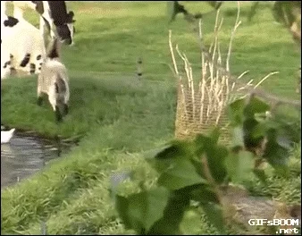

DO CAMPO À CIDADE COLHENDO OPORTUNIDADES

A migração do campo para a cidade é uma realidade constante ao longo dos anos, impulsionada por uma série de fatores que vão desde a busca por melhores condições de vida até a procura de oportunidades de emprego e educação. No entanto, é crucial reconhecer que essa mudança não precisa ser vista apenas como um êxodo rural, mas sim uma transição repleta de oportunidades aliada a tecnologia.
Uma pesquisa realizada pela associação brasileira de ''marketing'' rural e agronegócio indicou que a idade média dos produtores brasileiros ficou em torno de 46,5 anos, caindo 3,1% entre 2013 e 2017, é importante ressaltar que, embora as cidades ofereçam uma variedade de oportunidades, também enfrentam desafios como a falta de moradia acessível, o congestionamento urbano a poluição.
O filósofo sartre defendia que cabe ao ser humano escolher seu modo de viver, pois, esse seria livre e responsável.
É de fundamento importância discutir a problemática sobre a sociedade de consumo e sua principal consequência que é o desperdício, acarretando fome e pobreza.
Em suma, a migração do campo para a cidade não deve ser encarada apenas como uma busca por melhores condições de vida, mas sim como uma jornada repleta de oportunidades de crescimento pessoal, profissional e comunitário. Ao reconhecer e aproveitar essa, oportunidades, podemos concluir sociedades mais inclusivas e resilientes, onde o campo e a cidade se complementam e prosperamente e prosperam juntos.